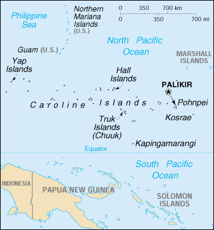

|
Micronesia, Federated States of | |
| Introduction Geography People Government Economy Communications Transportation Military Transnational Issues | ||
|  | ||
| Micronesia, Federated States of | Introduction | Top of Page |
| Background: | In 1979 the Federated States of Micronesia, a UN Trust Territory under US administration, adopted a constitution. In 1986 independence was attained under a Compact of Free Association with the United States. Present concerns include large-scale unemployment, overfishing, and overdependence on US aid. |
| Micronesia, Federated States of | Geography | Top of Page |
| Location: | Oceania, island group in the North Pacific Ocean, about three-quarters of the way from Hawaii to Indonesia |
| Geographic coordinates: | 6 55 N, 158 15 E |
| Map references: | Oceania |
| Area: |
total:
702 sq km
land: 702 sq km water: 0 sq km note: includes Pohnpei (Ponape), Truk (Chuuk) Islands, Yap Islands, and Kosrae |
| Area - comparative: | four times the size of Washington, DC |
| Land boundaries: | 0 km |
| Coastline: | 6,112 km |
| Maritime claims: |
exclusive economic zone:
200 NM
territorial sea: 12 NM |
| Climate: | tropical; heavy year-round rainfall, especially in the eastern islands; located on southern edge of the typhoon belt with occasionally severe damage |
| Terrain: | islands vary geologically from high mountainous islands to low, coral atolls; volcanic outcroppings on Pohnpei, Kosrae, and Truk |
| Elevation extremes: |
lowest point:
Pacific Ocean 0 m
highest point: Totolom 791 m |
| Natural resources: | forests, marine products, deep-seabed minerals |
| Land use: |
arable land:
NA%
permanent crops: NA% permanent pastures: NA% forests and woodland: NA% other: NA% |
| Irrigated land: | NA sq km |
| Natural hazards: | typhoons (June to December) |
| Environment - current issues: | overfishing |
| Environment - international agreements: |
party to:
Biodiversity, Climate Change, Climate Change-Kyoto Protocol, Desertification, Hazardous Wastes, Law of the Sea, Ozone Layer Protection
signed, but not ratified: none of the selected agreements |
| Geography - note: | four major island groups totaling 607 islands |
| Micronesia, Federated States of | People | Top of Page |
| Population: | 134,597 (July 2001 est.) |
| Age structure: |
0-14 years:
NA%
15-64 years: NA% 65 years and over: NA% |
| HIV/AIDS - adult prevalence rate: | NA% |
| HIV/AIDS - people living with HIV/AIDS: | NA |
| HIV/AIDS - deaths: | NA |
| Nationality: |
noun:
Micronesian(s)
adjective: Micronesian; Kosrae(s), Pohnpeian(s), Trukese, Yapese |
| Ethnic groups: | nine ethnic Micronesian and Polynesian groups |
| Religions: | Roman Catholic 50%, Protestant 47%, other and none 3% |
| Languages: | English (official and common language), Trukese, Pohnpeian, Yapese, Kosrean |
| Literacy: |
definition:
age 15 and over can read and write
total population: 89% male: 91% female: 88% (1980 est.) |
| Micronesia, Federated States of | Government | Top of Page |
| Country name: |
conventional long form:
Federated States of Micronesia
conventional short form: none former: Ponape, Truk, and Yap Districts (Trust Territory of the Pacific Islands) abbreviation: FSM |
| Government type: | constitutional government in free association with the US; the Compact of Free Association entered into force 3 November 1986 |
| Capital: | Palikir |
| Administrative divisions: | 4 states; Chuuk (Truk), Kosrae, Pohnpei, Yap |
| Independence: | 3 November 1986 (from the US-administered UN Trusteeship) |
| National holiday: | Constitution Day, 10 May (1979) |
| Constitution: | 10 May 1979 |
| Legal system: | based on adapted Trust Territory laws, acts of the legislature, municipal, common, and customary laws |
| Suffrage: | 18 years of age; universal |
| Executive branch: |
chief of state:
President Leo A. FALCAM (since 21 July 1999); Vice President Redley KILLION (since 21 July 1999); note - the president is both the chief of state and head of government
head of government: President Leo A. FALCAM (since 21 July 1999); Vice President Redley KILLION (since 21 July 1999); note - the president is both the chief of state and head of government cabinet: Cabinet elections: president and vice president elected by Congress from among the four senators-at-large for four-year terms; election last held NA May 1999 (next to be held NA May 2003) election results: Leo A. FALCAM elected president; percent of Congress vote - NA%; Redley KILLION elected vice president; percent of Congress vote - NA% |
| Legislative branch: |
unicameral Congress (14 seats; members elected by popular vote; four - one elected from each of state - to serve four-year terms and 10 - elected from single-member districts delineated by population - to serve two-year terms)
elections: elections for four-year term seats last held 2 March 1999 (next to be held NA March 2003); elections for two-year term seats last held 6 March 2001 (next to be held NA March 2003) election results: percent of vote - NA%; seats - independents 14 |
| Judicial branch: | Supreme Court |
| Political parties and leaders: | no formal parties |
| International organization participation: | ACP, AsDB, ESCAP, G-77, IBRD, ICAO, IDA, IFC, IMF, Intelsat, IOC, ITU, OPCW, Sparteca, SPC, SPF, UN, UNCTAD, UNESCO, WHO, WMO |
| Diplomatic representation in the US: |
chief of mission:
Ambassador Jesse Bibiano MAREHALAU
chancery: 1725 N Street NW, Washington, DC 20036 telephone: [1] (202) 223-4383 FAX: [1] (202) 223-4391 consulate(s) general: Honolulu and Tamuning (Guam) |
| Diplomatic representation from the US: |
chief of mission:
Ambassador Diane E. WATSON
embassy: address NA, Kolonia mailing address: P. O. Box 1286, Kolonia, Pohnpei, Federated States of Micronesia 96941 telephone: [691] 320-2187 FAX: [691] 320-2186 |
| Flag description: | light blue with four white five-pointed stars centered; the stars are arranged in a diamond pattern |
| Micronesia, Federated States of | Economy | Top of Page |
| Economy - overview: | Economic activity consists primarily of subsistence farming and fishing. The islands have few mineral deposits worth exploiting, except for high-grade phosphate. The potential for a tourist industry exists, but the remoteness of the location and a lack of adequate facilities hinder development. In 1996, the country experienced a 20% reduction in revenues from the Compact of Free Association - the agreement between the US and Micronesia in which Micronesia receives $1.3 billion in financial and technical assistance over a 15-year period until 2001 - as a result of the second step-down under the agreement. Since these revenues accounted for 57% of consolidated government revenues, reduced Compact funding resulted in a severe depression. While Micronesia's economy appears to have bottomed out in 1999, the country's medium-term economic outlook remains fragile due to likely further reductions in external grants made under the US Compact funding. Geographical isolation and a poorly developed infrastructure remain major impediments to long-term growth. |
| GDP: |
purchasing power parity - $263 million (1999 est.)
note: GDP is supplemented by grant aid, averaging perhaps $100 million annually |
| GDP - real growth rate: | 0.3% (1999 est.) |
| GDP - per capita: | purchasing power parity - $2,000 (1999 est.) |
| GDP - composition by sector: |
agriculture:
19%
industry: 4% services: 77% (1996 est.) |
| Population below poverty line: | NA% |
| Household income or consumption by percentage share: |
lowest 10%:
NA%
highest 10%: NA% |
| Inflation rate (consumer prices): | 2.6% (FY98/99) |
| Labor force: | NA |
| Labor force - by occupation: | two-thirds are government employees |
| Unemployment rate: | 16% (1999 est.) |
| Budget: |
revenues:
$161 million ($69 million less grants)
expenditures: $160 million, including capital expenditures of $NA (1998 est.) |
| Industries: | tourism, construction, fish processing, craft items from shell, wood, and pearls |
| Industrial production growth rate: | NA% |
| Electricity - production: | NA kWh |
| Electricity - production by source: |
fossil fuel:
NA%
hydro: NA% nuclear: NA% other: NA% |
| Electricity - consumption: | NA kWh |
| Agriculture - products: | black pepper, tropical fruits and vegetables, coconuts, cassava (tapioca), sweet potatoes; pigs, chickens |
| Exports: | $73 million (f.o.b., 1996 est.) |
| Exports - commodities: | fish, garments, bananas, black pepper |
| Exports - partners: | Japan, US, Guam |
| Imports: | $168 million (c.i.f., 1996 est.) |
| Imports - commodities: | food, manufactured goods, machinery and equipment, beverages |
| Imports - partners: | US, Japan, Australia |
| Debt - external: | $111 million (1997 est.) |
| Economic aid - recipient: | under terms of the Compact of Free Association, the US will provide $1.3 billion in grant aid during the period 1986-2001 |
| Currency: | US dollar (USD) |
| Currency code: | USD |
| Exchange rates: | the US dollar is used |
| Fiscal year: | 1 October - 30 September |
| Micronesia, Federated States of | Communications | Top of Page |
| Telephones - main lines in use: | 11,000 (2001) |
| Telephones - mobile cellular: | NA |
| Telephone system: |
general assessment:
adequate system
domestic: islands interconnected by shortwave radiotelephone (used mostly for government purposes) international: satellite earth stations - 4 Intelsat (Pacific Ocean) |
| Radio broadcast stations: | AM 5, FM 1, shortwave 0 (1998) |
| Radios: | NA |
| Television broadcast stations: | 2 (1997) |
| Televisions: | NA |
| Internet country code: | .fm |
| Internet Service Providers (ISPs): | 1 (2000) |
| Internet users: | 2,000 (2000) |
| Micronesia, Federated States of | Transportation | Top of Page |
| Railways: | 0 km |
| Highways: |
total:
240 km
paved: 42 km unpaved: 198 km (1996) |
| Waterways: | none |
| Ports and harbors: | Colonia (Yap), Kolonia (Pohnpei), Lele, Moen |
| Merchant marine: | none (2000 est.) |
| Airports: | 7 (2000 est.) |
| Airports - with paved runways: |
total:
6
1,524 to 2,437 m: 4 914 to 1,523 m: 2 (2000 est.) |
| Airports - with unpaved runways: |
total:
1
914 to 1,523 m: 1 (2000 est.) |
| Micronesia, Federated States of | Military | Top of Page |
| Military - note: | Federated States of Micronesia (FSM) is a sovereign, self-governing state in free association with the US; FSM is totally dependent on the US for its defense |
| Micronesia, Federated States of | Transnational Issues | Top of Page |
| Disputes - international: | none |
{kind=link}
{kind=link}